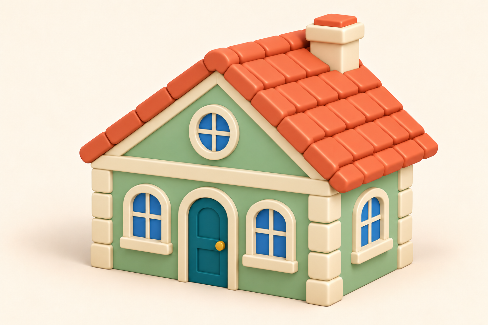

Image-референс для третьего жилого дома. 3D-модель ещё не заказана.

Три места в городе
Сохраняем три позиции и ширину 5. Полные размеры около 5 × 4,2 × 4 — художественная цель; проверим их на GLB.
- Один этаж, широкий треугольный фронтон и круглый чердачный глазок.
- Один конёк крыши, без выступающей мансарды дома A.
- Непрозрачные окна, закрытая труба, дверь у земли.
- Ориентир до 7 тысяч треугольников, одна текстура 512 px.
- У центрального южного дома проектный зазор до дороги 0,5; у крайнего — проверяем ещё дерево.
Предложение по фасадам
Северный дом оставляем как сейчас. Два южных предлагаем развернуть входом к трамвайной улице. Это ещё не изменение игры.
Габариты и проверки · Промпты и происхождение